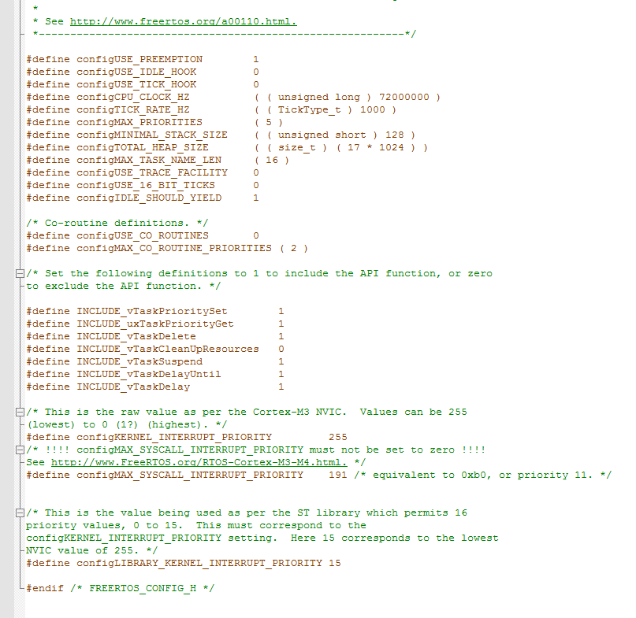
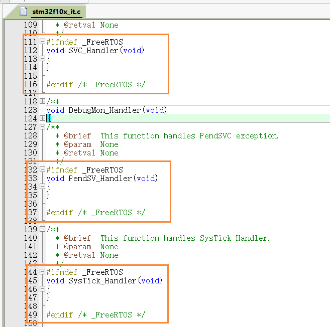

# 移植修改
在 FreeRTOS 篇章之系统移植 中，我们有把 FreeRTOSv9.0.0\FreeRTOS\Demo\CORTEX_STM32F103_Keil 路径下的 FreeRTOSConfig.h 文件复制到我们用户可修改的 App 文件夹下，并且导入了工程，但是，该 FreeRTOSConfig.h 文件的内容并不是我们真正想要了内容，需要我们进行更改，而源文件内容就只有下面这么点内容

虽然能满足 FreeRTOS 跑起来，但是往往随着功能的添加，我们需要 FreeRTOS 的更多支持，而这里也只是展示了个别裁剪功能；为了物尽其用，避免以后还要继续添加，所以我们直接就导入 FreeRTOS 所提供的功能选择，修改成如下内容：
#ifndef FREERTOS_CONFIG_H | |
#define FREERTOS_CONFIG_H | |
/* Here is a good place to include header files that are required across | |
your application. */ | |
#include "something.h" | |
#define configUSE_PREEMPTION 1 | |
#define configUSE_PORT_OPTIMISED_TASK_SELECTION 0 | |
#define configUSE_TICKLESS_IDLE 0 | |
#define configCPU_CLOCK_HZ 60000000 | |
#define configTICK_RATE_HZ 250 | |
#define configMAX_PRIORITIES 5 | |
#define configMINIMAL_STACK_SIZE 128 | |
#define configMAX_TASK_NAME_LEN 16 | |
#define configUSE_16_BIT_TICKS 0 | |
#define configIDLE_SHOULD_YIELD 1 | |
#define configUSE_TASK_NOTIFICATIONS 1 | |
#define configUSE_MUTEXES 0 | |
#define configUSE_RECURSIVE_MUTEXES 0 | |
#define configUSE_COUNTING_SEMAPHORES 0 | |
#define configUSE_ALTERNATIVE_API 0 /* Deprecated! */ | |
#define configQUEUE_REGISTRY_SIZE 10 | |
#define configUSE_QUEUE_SETS 0 | |
#define configUSE_TIME_SLICING 0 | |
#define configUSE_NEWLIB_REENTRANT 0 | |
#define configENABLE_BACKWARD_COMPATIBILITY 0 | |
#define configNUM_THREAD_LOCAL_STORAGE_POINTERS 5 | |
#define configSTACK_DEPTH_TYPE uint16_t | |
#define configMESSAGE_BUFFER_LENGTH_TYPE size_t | |
/* Memory allocation related definitions. */ | |
#define configSUPPORT_STATIC_ALLOCATION 1 | |
#define configSUPPORT_DYNAMIC_ALLOCATION 1 | |
#define configTOTAL_HEAP_SIZE 10240 | |
#define configAPPLICATION_ALLOCATED_HEAP 1 | |
/* Hook function related definitions. */ | |
#define configUSE_IDLE_HOOK 0 | |
#define configUSE_TICK_HOOK 0 | |
#define configCHECK_FOR_STACK_OVERFLOW 0 | |
#define configUSE_MALLOC_FAILED_HOOK 0 | |
#define configUSE_DAEMON_TASK_STARTUP_HOOK 0 | |
/* Run time and task stats gathering related definitions. */ | |
#define configGENERATE_RUN_TIME_STATS 0 | |
#define configUSE_TRACE_FACILITY 0 | |
#define configUSE_STATS_FORMATTING_FUNCTIONS 0 | |
/* Co-routine related definitions. */ | |
#define configUSE_CO_ROUTINES 0 | |
#define configMAX_CO_ROUTINE_PRIORITIES 1 | |
/* Software timer related definitions. */ | |
#define configUSE_TIMERS 1 | |
#define configTIMER_TASK_PRIORITY 3 | |
#define configTIMER_QUEUE_LENGTH 10 | |
#define configTIMER_TASK_STACK_DEPTH configMINIMAL_STACK_SIZE | |
/* Interrupt nesting behaviour configuration. */ | |
#define configKERNEL_INTERRUPT_PRIORITY [dependent of processor] | |
#define configMAX_SYSCALL_INTERRUPT_PRIORITY [dependent on processor and application] | |
#define configMAX_API_CALL_INTERRUPT_PRIORITY [dependent on processor and application] | |
/* Define to trap errors during development. */ | |
#define configASSERT( ( x ) ) if( ( x ) == 0 ) vAssertCalled( __FILE__, __LINE__ ) | |
/* FreeRTOS MPU specific definitions. */ | |
#define configINCLUDE_APPLICATION_DEFINED_PRIVILEGED_FUNCTIONS 0 | |
/* Optional functions - most linkers will remove unused functions anyway. */ | |
#define INCLUDE_vTaskPrioritySet 1 | |
#define INCLUDE_uxTaskPriorityGet 1 | |
#define INCLUDE_vTaskDelete 1 | |
#define INCLUDE_vTaskSuspend 1 | |
#define INCLUDE_xResumeFromISR 1 | |
#define INCLUDE_vTaskDelayUntil 1 | |
#define INCLUDE_vTaskDelay 1 | |
#define INCLUDE_xTaskGetSchedulerState 1 | |
#define INCLUDE_xTaskGetCurrentTaskHandle 1 | |
#define INCLUDE_uxTaskGetStackHighWaterMark 0 | |
#define INCLUDE_xTaskGetIdleTaskHandle 0 | |
#define INCLUDE_eTaskGetState 0 | |
#define INCLUDE_xEventGroupSetBitFromISR 1 | |
#define INCLUDE_xTimerPendFunctionCall 0 | |
#define INCLUDE_xTaskAbortDelay 0 | |
#define INCLUDE_xTaskGetHandle 0 | |
#define INCLUDE_xTaskResumeFromISR 1 | |
/* A header file that defines trace macro can be included here. */ | |
#endif /* FREERTOS_CONFIG_H */ |
当然，这只是官方提供的，较为完整的配置模版；具体实现什么功能还是要我们对相应的宏进行修改的。
# 配置项详解
1、configUSE_PREEMPTION
置 1 ：RTOS 使用抢占式调度器，即当进程位于内核空间时，有一个更高优先级的任务出现时，如果当前内核允许抢占，则可以将当前任务挂起，执行优先级更高的进程；
置 0 ：RTOS 使用协作式调度器（时间片），协作式操作系统是任务主动释放 CPU 后，切换到下一个任务，任务切换的时机完全取决于正在运行的任务，因此，高优先级的进程不能中止正在内核中运行的低优先级的进程而抢占 CPU 运行。
2、configUSE_PORT_OPTIMISED_TASK_SELECTION
一些 FreeRTOS 硬件端口在选择下一个要执行的任务，具有两种的方法：通用方法和特定于该硬件端口的方法。
通用方法：
- 在
configUSE_PORT_OPTIMISED_TASK_SELECTION设置为0（显式）或未实现特定于硬件端口的方法（隐式）时使用。 - 可以与所有 FreeRTOS 硬件端口一起使用。
- 完全用 C 编写，使其效率低于使用特定硬件端口的方法。
- 不限制可用优先级的最大数量。
特定于硬件端口的方法：
- 不适用于所有硬件端口。
- 在
configUSE_PORT_OPTIMISED_TASK_SELECTION设置为1时使用。 - 依赖于一个或多个特定于体系结构的汇编指令（通常为计数前导零 [CLZ] 或等效指令），因此只能与专门为其编写的体系结构一起使用。
- 比通用方法更有效。
- 通常，最大可用优先级数限制为 32。
3、configUSE_TICKLESS_IDLE
置 1 ：使能低功耗 tickless 模式；
置 0 ：保持系统节拍（tick）中断一直运行。
在低功耗 tickless 模式，通常使用空闲钩子函数设置 CPU 进入低功耗模式来达到省电的目的。
4、configUSE_IDLE_HOOK
置 1 ：使用空闲钩子（Idle Hook 类似于回调函数）；
置 0 ：忽略空闲钩子。
空闲任务钩子是一个函数，这个函数由用户来实现，FreeRTOS 规定了函数的名字和参数： void vApplicationIdleHook(void) ，这个函数在每个空闲任务周期都会被调用。
5、configUSE_MALLOC_FAILED_HOOK
每次创建任务，队列或信号量时，内核都会使用对 pvPortMalloc() 的调用从堆中分配内存。FreeRTOS 的官方下载包中包含五个堆内存分配方案；这些方案分别在 heap_1.c ， heap_2.c ， heap_3.c ， heap_4.c 和 heap_5.c 源文件中进行实现； configUSE_MALLOC_FAILED_HOOK 仅在使用这五个堆内存分配方案之一时才有意义。
如果定义并正确配置 malloc() 申请失败的钩子函数，则这个函数会在 pvPortMalloc() 函数返回 NULL 时被调用；注意：仅当 FreeRTOS 在响应内存分配请求时发现堆内存不足时，才返回 NULL。
置 1 ：则应用程序必须定义一个 malloc() 申请失败的挂钩函数；
置 0 ：则忽略 malloc() 申请失败的挂钩函数，即使定义了这个挂钩函数。
malloc() 申请失败的挂钩函数必须具有如下所示的名称和原型：
void vApplicationMallocFailedHook( void ); |
6、configUSE_DAEMON_TASK_STARTUP_HOOK
置 1 ：则应用程序必须定义一个具有确切名称和原型的钩子函数；
置 0 ：则忽略该钩子函数。
其名称和原型如下所示：
void vApplicationDaemonTaskStartupHook( void ); |
首次执行 RTOS 守护程序任务（也称为 计时器服务任务 ）时，钩子函数将被精确调用一次 。任何需要运行 RTOS 的应用程序初始化代码都可以放在挂钩函数中。
7、configUSE_TICK_HOOK
置 1 ：使用时间片钩子（Tick Hook）；
置 0 ：忽略时间片钩子。
时间片钩子是一个函数，这个函数由用户来实现，FreeRTOS 规定了函数的名字和参数： void vApplicationTickHook(void) ，时间片中断可以周期性的调用。
8、configCPU_CLOCK_HZ
输入以 Hz 为单位的频率，该驱动频率将用于系统滴答中断的外设驱动的内部时钟，通常与驱动内部 CPU 时钟的时钟相同；配置此值是为了正确的配置系统节拍中断周期。
9、configTICK_RATE_HZ
配置 RTOS 滴答中断的频率；用于测量时间，即一秒中断的次数，每次中断 RTOS 都会进行任务调度。
更高的滴答频率意味着同一时间下可以测量到更高的分辨率；但是，较高的滴答频率也意味着 RTOS 内核将使用更多的 CPU 时间，因此使得效率降低。RTOS 演示例程均使用 1000Hz 的滴答频率，这是为了测试 RTOS 内核，因此比实际使用的高得多。（实际使用时不用这么高的系统节拍中断频率）
多个任务可以共享相同的优先级。通过在每个 RTOS 系统节拍中断到来时切换任务，RTOS 调度程序将在优先级相同的任务之间共享处理器时间；因此，较高的滴答频率会减少分配给每个任务的 “时间片” 。
10、configMAX_PRIORITIES
配置应用程序任务可用的优先级数；任何数量的任务都可以共享相同的优先级。协同例程的优先级是分开的，详情见 configMAX_CO_ROUTINE_PRIORITIES 。
每个可用的优先级都会消耗 RTOS 内核中的 RAM，因此该值不应设置为高于应用程序实际需要的值。
每一个任务都会被分配一个优先级，优先级值在 0 ~ (configMAX_PRIORITIES - 1) 之间。低优先级数表示低优先级任务，空闲任务的优先级为 0（tskIDLE_PRIORITY），因此它是最低优先级任务。
11、configMINIMAL_STACK_SIZE
空闲任务使用的堆栈大小。通常此值不应小于对应处理器演示例程文件 FreeRTOSConfig.h 中定义的数值
就像 xTaskCreate() 和 xTaskCreateStatic() 函数的堆栈大小参数一样，堆栈大小以字为单位而不是字节；如果在 32 位处理器上，当堆栈大小为 100 则表示 400 字节的空间大小。
12、configMAX_TASK_NAME_LEN
创建任务时，描述任务信息的字符串的最大允许长度。长度包括 \0 字符串结束符。
13、configUSE_TRACE_FACILITY
置 1 ：表示启动可视化跟踪调试，会激活一些其他的结构成员和函数；
置 0 ：忽略。
14、configUSE_STATS_FORMATTING_FUNCTIONS
将 configUSE_TRACE_FACILITY 和 configUSE_STATS_FORMATTING_FUNCTIONS 都设置为 1 ，则再构建中包含编译 vTaskList() 和 vTaskGetRunTimeStats() 函数；
否则，其中一个宏为 0 ，就会从构建中省略这两个函数，不进行编译；通常只是在调试时才使用，用来观察各任务，跟 13 的宏连用。
15、configUSE_16_BIT_TICKS
时间是以 “ticks” 来衡量的，这是自 RTOS 内核启动以来滴答中断执行的次数；tick 计数保存在 TickType_t 类型的变量中。
置 1 ： TickType_t 被定义为无符号的 16 位类型；
置 0 ： TickType_t 被定义为无符号的 32 位类型。
使用 16 位类型将大大提高 8 位和 16 位处理器系统的性能，但会将最大的可指定时间段限制为 65535 个 “ticks” 。因此，假设滴答频率为 250Hz，则使用 16 位计数器时任务可以延迟或阻止的最长时间为 262 秒，而使用 32 位计数器时为 17179869 秒。
16、configIDLE_SHOULD_YIELD
此参数控制处于空闲优先级的任务的行为。它仅在以下情况下起作用：
- 正在使用抢占式调度程序。
- 该应用程序创建以空闲优先级运行的任务。
如果 configUSE_TIME_SLICING 被设置为 1 （或未定义），则具有相同优先级的任务将共享使用时间片。如果具有相同优先级的任务，它的优先级高于空闲优先级，并且没有一个任务被抢占，则可以假定这些具有相同优先级的任务，它们分配等量的处理时间；
但当任务共享空闲优先级时，情况会稍微有些不同。如果 configIDLE_SHOULD_YIELD 设置为 1 ，则任何跟空闲优先级相同的用户任务就绪时，空闲任务会立刻让出 CPU，使用户任务得以运行，这样确保了能最快响应用户任务。但是，此行为可能会产生不良影响（取决于您的应用程序的需求），如下所示：
上图描述了四个处于空闲优先级的任务的执行模式。任务 A ， B 和 C 是应用程序任务；任务 I 是空闲任务。在时间 T0，T1，…，T6 定期进行上下文切换；在空闲任务运行中，当任务 A 任务产生时，空闲任务立刻让出 CPU，开始执行任务 A ，但此刻空闲任务 I 已经消耗了当前时间片的一些时间了，这样的结果就是空闲任务 I 和任务 A 共享同一时间片。因此，应用程序任务 B 和 C 比应用程序任务 A 获得更多的处理时间。
可以通过以下方式避免这种情况：
- 如果合适，请使用空闲钩子函数代替空闲优先级的单独任务。
- 以高于空闲优先级的优先级创建所有应用程序任务。
- 将
configIDLE_SHOULD_YIELD设置为0。
将 configIDLE_SHOULD_YIELD 设置为 0 可以防止空闲任务产生处理时间，直到其时间片结束为止。这样可以确保为所有处于空闲优先级的任务分配相等的处理时间（如果没有一个任务被抢占），但代价是将更大比例的总处理时间分配给空闲任务。
17、configUSE_TASK_NOTIFICATIONS
置 1 （或未定义）：开启任务通知功能，有关的 API 函数会被包含编译；
置 0 ：直接从程序中关闭任务通知功能及其关联的 API。
该功能默认是开启的。开启后，每个任务多增加 8 字节 RAM。
18、configUSE_MUTEXES
置 1 ：使用互斥量；
置 0 ：不使用互斥量。
读者应该了解在 FreeRTOS 中互斥量和二值信号量的区别。
19、configUSE_RECURSIVE_MUTEXES
置 1 ：使用递归互斥量；
置 0 ：不使用递归互斥量。
20、configUSE_COUNTING_SEMAPHORES
置 1 ：使用计数信号量；
置 0 ：不使用计数信号量。
21、configUSE_ALTERNATIVE_API
置 1 ：使用 “alternative” 队列函数；
置 0 ：不使用 “alternative” 队列函数。
“alternative” API 队列函数在 queue.h 头文件中有详细描述；“alternative” API 已被弃用，在新的设计中请不要使用它！
22、configCHECK_FOR_STACK_OVERFLOW
在 Stack Usage and Stack Overflow Checking 链接中有详细描述堆栈使用情况和堆栈溢出检查的方法，这里就不详细说了。
23、configQUEUE_REGISTRY_SIZE
通过此定义来设置可以注册的信号量和消息队列个数。
队列注册表具有两个目的，这两个目的都与 RTOS 内核调试相关联：
- 它允许将文本名称与队列关联，以便在调试 GUI 中轻松识别队列。
- 它包含调试器查找每个已注册队列和信号量所需的信息。
除了进行内核调试外，队列注册表没有其它任何目的；只有注册后的队列和信号量才可以使用 RTOS 内核调试器查看，有关更多信息，请参见 vQueueAddToRegistry() 和 vQueueUnregisterQueue() 的 API 参考文档。
24、configUSE_QUEUE_SETS
置 1 ：使能队列集功能（可以阻塞、挂起到多个队列和信号量）；
置 0 ：忽略队列集功能。
25、configUSE_TIME_SLICING
置 1 （或未定义）：默认情况下，FreeRTOS 使用基于时间片的优先级抢占式调度器，这意味着 RTOS 调度器将始终运行处于最高优先级的 “就绪” 状态任务，并会在每个 RTOS 滴答中断时对在优先级相同的任务之间进行切换；
置 0 ：RTOS 调度程序仍将运行处于最高优先级的 “就绪” 状态任务，但不会由于发生了滴答中断而在优先级相同的任务之间切换。
26、configUSE_NEWLIB_REENTRANT
置 1 ：将为每个创建的任务分配一个 newlib（一个嵌入式 C 库）进入结构；
置 0 ：不分配。
注意 Newlib 支持是已经包含在普遍需求中了，但 FreeRTOS 维护者本身并未使用。FreeRTOS 是不负责由此产生的 newlib 操作的，因此用户必须熟悉 newlib，并且必须提供必要存根的系统级实现。请注意，（在撰写本文时）当前的 newlib 设计实现了一个系统级的 malloc() ，这个 malloc() 必须锁上。
27、configENABLE_BACKWARD_COMPATIBILITY
FreeRTOS.h 头文件包含一组 #define 宏，这些宏将在 V8.0.0 之前的 FreeRTOS 版本中使用的数据类型的名称映射到在 FreeRTOS 的 V8.0.0 版本中使用的名称，这些宏可以确保 RTOS 内核升级到 V8.0.0 或以上版本时，不用对之前的应用代码做任何修改。
置 1 ：包含这些 #define 宏；
置 0 ：排除这些宏，从而允许进行验证，以确保未使用 V8.0.0 之前的版本。
各类型定义如下：
#if configENABLE_BACKWARD_COMPATIBILITY == 1 | |
#define eTaskStateGet eTaskGetState | |
#define portTickType TickType_t | |
#define xTaskHandle TaskHandle_t | |
#define xQueueHandle QueueHandle_t | |
#define xSemaphoreHandle SemaphoreHandle_t | |
#define xQueueSetHandle QueueSetHandle_t | |
#define xQueueSetMemberHandle QueueSetMemberHandle_t | |
#define xTimeOutType TimeOut_t | |
#define xMemoryRegion MemoryRegion_t | |
#define xTaskParameters TaskParameters_t | |
#define xTaskStatusType TaskStatus_t | |
#define xTimerHandle TimerHandle_t | |
#define xCoRoutineHandle CoRoutineHandle_t | |
#define pdTASK_HOOK_CODE TaskHookFunction_t | |
#define portTICK_RATE_MS portTICK_PERIOD_MS | |
#define pcTaskGetTaskName pcTaskGetName | |
#define pcTimerGetTimerName pcTimerGetName | |
#define pcQueueGetQueueName pcQueueGetName | |
#define vTaskGetTaskInfo vTaskGetInfo | |
/* Backward compatibility within the scheduler code only - these definitions | |
are not really required but are included for completeness. */ | |
#define tmrTIMER_CALLBACK TimerCallbackFunction_t | |
#define pdTASK_CODE TaskFunction_t | |
#define xListItem ListItem_t | |
#define xList List_t | |
#endif /* configENABLE_BACKWARD_COMPATIBILITY */ |
28、configNUM_THREAD_LOCAL_STORAGE_POINTERS
设置每个任务的线程本地存储指针数组大小；详情请看链接 Thread Local Storage Pointers 。
29、configSTACK_DEPTH_TYPE
设置用于在调用 xTaskCreate() 时指定堆栈深度的类型，并使用其他各种堆栈大小（例如，在返回 堆栈高位标记时 ）。
在较旧的版本中，FreeRTOS 使用 UBaseType_t 类型的变量来指定堆栈大小，但是发现这对 8 位微控制器的限制太大。因此， configSTACK_DEPTH_TYPE 允许应用程序开发人员指定要使用的类型，从而消除了这个限制。
30、configMESSAGE_BUFFER_LENGTH_TYPE
FreeRTOS 消息缓冲区 使用 configMESSAGE_BUFFER_LENGTH_TYPE 类型的变量来存储每个消息的长度；如果未定义 configMESSAGE_BUFFER_LENGTH_TYPE ，则默认为 size_t 。
如果存储在消息缓冲区中的消息永远不会大于 255 个字节，那么在 32 位微控制器上将 configMESSAGE_BUFFER_LENGTH_TYPE 定义为 uint8_t 将为每个消息节省 3 个字节；同样，如果存储在消息缓冲区中的消息永远不会大于 65535 字节，则在 32 位微控制器上将 configMESSAGE_BUFFER_LENGTH_TYPE 定义为 uint16_t 将为每条消息节省 2 个字节。
31、configSUPPORT_STATIC_ALLOCATION
置 1 ：可以使用应用程序编写者提供的 RAM 创建 RTOS 对象；
置 0 （或未定义）：只能使用从 FreeRTOS 堆分配的 RAM 创建 RTOS 对象。
如果将 configSUPPORT_STATIC_ALLOCATION 设置为 1 ，则应用程序编写者还必须提供两个回调函数： vApplicationGetIdleTaskMemory() 提供用于 RTOS 空闲任务的内存，以及（如果 configUSE_TIMERS 设置为 1 ） vApplicationGetTimerTaskMemory() 提供用于以下目的的内存： RTOS 守护程序 / 计时器服务任务。
下面官方提供了示例：
/* configSUPPORT_STATIC_ALLOCATION is set to 1, so the application must provide an | |
implementation of vApplicationGetIdleTaskMemory() to provide the memory that is | |
used by the Idle task. */ | |
void vApplicationGetIdleTaskMemory( StaticTask_t **ppxIdleTaskTCBBuffer, | |
StackType_t **ppxIdleTaskStackBuffer, | |
uint32_t *pulIdleTaskStackSize ) | |
{ | |
/* If the buffers to be provided to the Idle task are declared inside this | |
function then they must be declared static – otherwise they will be allocated on | |
the stack and so not exists after this function exits. */ | |
static StaticTask_t xIdleTaskTCB; | |
static StackType_t uxIdleTaskStack[ configMINIMAL_STACK_SIZE ]; | |
/* Pass out a pointer to the StaticTask_t structure in which the Idle task’s | |
state will be stored. */ | |
*ppxIdleTaskTCBBuffer = &xIdleTaskTCB; | |
/* Pass out the array that will be used as the Idle task’s stack. */ | |
*ppxIdleTaskStackBuffer = uxIdleTaskStack; | |
/* Pass out the size of the array pointed to by *ppxIdleTaskStackBuffer. | |
Note that, as the array is necessarily of type StackType_t, | |
configMINIMAL_STACK_SIZE is specified in words, not bytes. */ | |
*pulIdleTaskStackSize = configMINIMAL_STACK_SIZE; | |
} | |
/*———————————————————–*/ | |
/* configSUPPORT_STATIC_ALLOCATION and configUSE_TIMERS are both set to 1, so the | |
application must provide an implementation of vApplicationGetTimerTaskMemory() | |
to provide the memory that is used by the Timer service task. */ | |
void vApplicationGetTimerTaskMemory( StaticTask_t **ppxTimerTaskTCBBuffer, | |
StackType_t **ppxTimerTaskStackBuffer, | |
uint32_t *pulTimerTaskStackSize ) | |
{ | |
/* If the buffers to be provided to the Timer task are declared inside this | |
function then they must be declared static – otherwise they will be allocated on | |
the stack and so not exists after this function exits. */ | |
static StaticTask_t xTimerTaskTCB; | |
static StackType_t uxTimerTaskStack[ configTIMER_TASK_STACK_DEPTH ]; | |
/* Pass out a pointer to the StaticTask_t structure in which the Timer | |
task’s state will be stored. */ | |
*ppxTimerTaskTCBBuffer = &xTimerTaskTCB; | |
/* Pass out the array that will be used as the Timer task’s stack. */ | |
*ppxTimerTaskStackBuffer = uxTimerTaskStack; | |
/* Pass out the size of the array pointed to by *ppxTimerTaskStackBuffer. | |
Note that, as the array is necessarily of type StackType_t, | |
configTIMER_TASK_STACK_DEPTH is specified in words, not bytes. */ | |
*pulTimerTaskStackSize = configTIMER_TASK_STACK_DEPTH; | |
} | |
/* | |
* Examples of the callback functions that must be provided by the application to | |
* supply the RAM used by the Idle and Timer Service tasks if | |
* configSUPPORT_STATIC_ALLOCATION is set to 1. | |
*/ |
有关更多信息，请参见 Static Vs Dynamic Memory Allocation 页面。
32、configSUPPORT_DYNAMIC_ALLOCATION
置 1 （或未定义）：可以使用从 FreeRTOS 堆自动分配的 RAM 创建 RTOS 对象；
置 0 ：只能使用应用程序编写器提供的 RAM 创建 RTOS 对象。
有关更多信息，请参见 Static Vs Dynamic Memory Allocation 页面。
33、configTOTAL_HEAP_SIZE
FreeRTOS 堆中可用的 RAM 总量；仅当 configSUPPORT_DYNAMIC_ALLOCATION 设置为 1 且应用程序使用 FreeRTOS 源代码下载中的四个堆内存分配方案之一（ heap_1.c 、 heap_2.c 、 heap_4.c 或 heap_5.c ）时，才使用此值。
注意，当使用 heap_3 时，该值的设置无效。
有关更多详细信息，请参见 内存配置 部分。
34、configAPPLICATION_ALLOCATED_HEAP
默认情况下，FreeRTOS 堆 由 FreeRTOS 声明，并由链接器放置在内存中；将 configAPPLICATION_ALLOCATED_HEAP 设置为 1 可以使堆改为由应用程序编写者声明，这允许应用程序编写者将堆放置在内存中任意位置。
如果使用 heap_1.c 、 heap_2.c 或 heap_4.c ，并且 configAPPLICATION_ALLOCATED_HEAP 设置为 1 ，那么应用程序编写者必须提供一个 uint8_t 类型的数组，其名称和维数如下所示；该数组将用作 FreeRTOS 堆：
uint8_t ucHeap [configTOTAL_HEAP_SIZE]; |
如何将数组放置在特定的内存位置取决于所使用的编译器，请参阅编译器的文档。
35、configGENERATE_RUN_TIME_STATS
该 Run Time Stats 页面描述了此参数的用法。
36、configUSE_CO_ROUTINES
置 1 ：使用协程；
置 0 ：不使用协程。
如果使用协程，必须在工程中包含 croutine.c 文件。
注意：协程（Co-routines）主要用于资源发非常受限的嵌入式系统（RAM 非常少），通常不会用于 32 位微处理器；在当前嵌入式硬件环境下，不建议使用协程，FreeRTOS 的开发者早已经停止开发协程 。
37、configMAX_CO_ROUTINE_PRIORITIES
应用程序协程（Co-routines）的有效优先级数目 。任意数量的协同例程可以共享相同的优先级，使用协程可以单独的分配给任务优先级，请参阅 configMAX_PRIORITIES 。
38、configUSE_TIMERS
置 1 ：使用软件定时器；
置 0 ：不使用软件定时器
有关完整说明，请参见 FreeRTOS software timers 页面。
39、configTIMER_TASK_PRIORITY
设置软件计时器服务 / 守护程序任务的优先级。
有关完整说明，请参见 FreeRTOS software timers 页面。
40、configTIMER_QUEUE_LENGTH
设置软件计时器命令队列的长度。
有关完整说明，请参见 FreeRTOS software timers 页面。
41、configTIMER_TASK_STACK_DEPTH
设置分配给软件计时器服务 / 守护程序任务的堆栈深度。
有关完整说明，请参见 FreeRTOS software timers 页面。
42、configKERNEL_INTERRUPT_PRIORITY 、configMAX_SYSCALL_INTERRUPT_PRIORITY 和 configMAX_API_CALL_INTERRUPT_PRIORITY
包含 configKERNEL_INTERRUPT_PRIORITY 设置的硬件端口有 ARM Cortex-M3，PIC24，dsPIC，PIC32，SuperH 和 RX600。
包含 configMAX_SYSCALL_INTERRUPT_PRIORITY 设置的硬件端口有 PIC32，RX600，ARM Cortex-A 和 ARM Cortex-M。
configMAX_API_CALL_INTERRUPT_PRIORITY 是 configMAX_SYSCALL_INTERRUPT_PRIORITY 的新名称，仅由较新的端口使用，两者是等效的。
configKERNEL_INTERRUPT_PRIORITY 应该设置为最低优先级。
请注意，在以下讨论中，只能从中断服务例程中调用以 “FromISR” 结尾的 API 函数。
对于仅支持 configKERNEL_INTERRUPT_PRIORITY 的硬件端口：configKERNEL_INTERRUPT_PRIORITY 设置 RTOS 内核本身使用的中断优先级。调用 API 函数的中断也必须以此优先级执行。不调用 API 函数的中断可以以更高的优先级执行，因此不会因 RTOS 内核活动（在硬件本身的限制内）而延迟执行。
对于同时支持 configKERNEL_INTERRUPT_PRIORITY 和 configMAX_SYSCALL_INTERRUPT_PRIORITY 的硬件端口：configKERNEL_INTERRUPT_PRIORITY 设置 RTOS 内核本身使用的中断优先级。 configMAX_SYSCALL_INTERRUPT_PRIORITY 设置最高的中断优先级，从中可以调用中断安全的 FreeRTOS API 函数。
通过设置 configMAX_SYSCALL_INTERRUPT_PRIORITY 的优先级级别高于 configKERNEL_INTERRUPT_PRIORITY 可以实现完整的中断嵌套模式；这意味着即使在关键部分内部，FreeRTOS 内核也不会完全禁用中断 。
此外，这对于分段内核架构的微处理器是有利的。但是请注意，当一个新的中断被接受时，某些微控制器体系结构（在硬件中）将禁用中断，这意味着在硬件接受中断和 FreeRTOS 代码重新启用中断之间的短时间内不可避免地禁用中断。
不调用 API 函数的中断可以以高于 configMAX_SYSCALL_INTERRUPT_PRIORITY 的优先级执行，因此不会因 RTOS 内核执行而延迟。
例如：假设一个微控制器有 8 个中断优先级别：0 表示最低优先级，7 表示最高优先级（Cortex-M3 和 Cortex-M4 内核优先数和优先级别正好与之相反，后续文章会专门介绍它们）下在图描述了如果将两个配置常量设置为 4 和 0，则在每个优先级上可以做什么和不能做什么，如下所示：

这些配置参数允许非常灵活的中断处理：
- 在系统中可以像其它任务一样为中断处理任务分配优先级。这些任务通过一个相应中断唤醒。中断服务程序（ISR）本身应写得尽可能短，仅用于更新数据然后唤醒高优先级任务；然后，ISR 退出后，直接运行被唤醒的任务，因此中断处理（根据中断获取的数据来进行的相应处理）在时间上是连续的，就像 ISR 在完成这些工作。这样做的好处是，在执行处理程序任务时，所有中断都保持启用状态。
- 支持
configMAX_SYSCALL_INTERRUPT_PRIORITY的硬件端口将进一步扩展：允许使用完全嵌套的模型，其中 RTOS 内核中断优先级和configMAX_SYSCALL_INTERRUPT_PRIORITY之间的中断可以嵌套并允许调用 API 函数；而优先级高于configMAX_SYSCALL_INTERRUPT_PRIORITY的中断不会因 RTOS 内核活动而延迟。 - 在最高系统调用优先级之上运行的 ISR（大于
configMAX_SYSCALL_INTERRUPT_PRIORITY的优先级中断）不会被 RTOS 内核本身掩盖，因此它们的响应能力不受 RTOS 内核功能的影响。对于要求非常高的时间精度的中断（例如，执行电机转向的中断）而言，这是理想的选择；但是，在这类中断的中断服务例程中绝不可以调用 FreeRTOS 的 API 函数。
要使用此方案，您的应用程序设计必须遵守以下规则：使用 FreeRTOS API 的任何中断必须设置为与 RTOS 内核相同的优先级（由 configKERNEL_INTERRUPT_PRIORITY 宏配置）；或者对于包含支持 configMAX_SYSCALL_INTERRUPT_PRIORITY 功能的硬件端口，设置低于 configMAX_SYSCALL_INTERRUPT_PRIORITY 定义的优先级
针对 ARM Cortex-M3 和 ARM Cortex-M4 用户的特别说明：请阅读 专门介绍 ARM Cortex-M 设备上的中断优先级设置的页面 。至少要记住，ARM Cortex-M3 内核使用数字低优先级数字来表示高优先级中断，这看起来似乎违反直觉，而且很容易忘记！如果您希望为中断分配一个低优先级，请不要为其分配优先级 0（或其他低数值），因为这可能导致在系统中实际上是具有最高优先级中断的；因此，如果这个优先级高于 configMAX_SYSCALL_INTERRUPT_PRIORITY ，将会导致系统崩溃。
实际上，ARM Cortex-M3 内核的最低优先级为 255，但是，不同的 ARM Cortex-M3 供应商实现了不同数量的优先级位，并提供了期望以不同方式指定优先级的库函数。例如，在 STM32 上，您可以在 ST 驱动程序库调用中，根据实际情况把最低优先级指定为 15，而最高优先级为 0。
总结一下就是，在 FreeRtos 中调用中断关闭和中断开启 API 函数（例如在临界区区域内），其控制只对 configKERNEL_INTERRUPT_PRIORITY 到 configMAX_SYSCALL_INTERRUPT_PRIORITY 之间的优先级有效，其余的中断不受影响
43、configASSERT
configASSERT() 宏的语义与标准 C assert() 宏相同。如果传递给 configASSERT() 的参数为零，则触发断言。
在整个 FreeRTOS 源文件中都会调用 configASSERT() 来检查应用程序是如何使用 FreeRTOS；因此强烈建议使用定义的 configASSERT() 开发 FreeRTOS 应用程序。
举一个例子，我们想把非法参数所在的文件名和代码行数打印出来，可以先定义一个函数 vAssertCalled ，并传入触发 configASSERT() 调用的文件名和行号（__FILE__和 __LINE__是大多数编译器提供的标准宏）：
/* Define configASSERT() to call vAssertCalled() if the assertion fails. The assertion | |
has failed if the value of the parameter passed into configASSERT() equals zero. */ | |
#define configASSERT( ( x ) ) if( ( x ) == 0 ) vAssertCalled( __FILE__, __LINE__ ) |
这里只是为了演示，因为 vAssertCalled() 不是 FreeRTOS 里面的函数，可以将 configASSERT() 定义为采取应用程序编写者认为适当的任何操作。通常以这样的方式定义 configASSERT() ，它可以防止应用程序进一步执行；这有两个原因：在断言停止的地方，应用程序编写者可以调试产生断言的原因；若继续执行触发断言之后的程序可能会导致系统崩溃。
请注意，定义 configASSERT() 会增加应用程序代码的大小和执行时间；当应用程序稳定后，只需注释掉 FreeRTOSConfig.h 中的 configASSERT() 定义，就可以消除额外的开销了。
如果在调试器的控制下运行 FreeRTOS，则可以把 configASSERT() 定义为禁用中断并处于循环中的状态，如下所示。这将导致在断言测试失败的行上停止代码的运行，应用程序编写者只需要暂停调试器，就会立即将您带到有问题的行，以便您查看失败的原因。
/* Define configASSERT() to disable interrupts and sit in a loop. */ | |
#define configASSERT( ( x ) ) if( ( x ) == 0 ) { taskDISABLE_INTERRUPTS(); for( ;; ); } |
44、configINCLUDE_APPLICATION_DEFINED_PRIVILEGED_FUNCTIONS
configINCLUDE_APPLICATION_DEFINED_PRIVILEGED_FUNCTIONS 仅由 FreeRTOS MPU 使用。
如果 configINCLUDE_APPLICATION_DEFINED_PRIVILEGED_FUNCTIONS 设置为 1 ，则应用程序编写者必须提供一个名为 “ application_defined_privileged_functions.h ” 的头文件，可以在其之中实现应用程序编写者需要以特权模式执行的功能。请注意，尽管扩展名为 .h ，但头文件应包含 C 函数的实现，而不仅仅是函数的原型。
在 “ application_defined_privileged_functions.h ” 中实现的函数必须分别使用 prvRaisePrivilege() 函数和 portRESET_PRIVILEGE() 宏来保存和恢复处理器的特权状态.
例如，如果库提供的打印功能访问了应用程序编写者无法控制的 RAM，因此无法分配给受内存保护的用户模式任务，则可以使用以下代码将打印功能封装在特权功能中：
void MPU_debug_printf( const char *pcMessage ) | |
{ | |
/* State the privilege level of the processor when the function was called. */ | |
BaseType_t xRunningPrivileged = prvRaisePrivilege(); | |
/* Call the library function, which now has access to all RAM. */ | |
debug_printf( pcMessage ); | |
/* Reset the processor privilege level to its original value. */ | |
portRESET_PRIVILEGE( xRunningPrivileged ); | |
} |
该技术只能在开发过程中使用，而不能在部署过程中使用，因为它会绕过内存保护。
# 包含参数
以 “INCLUDE” 开头的宏允许将实时内核中那些未被应用程序使用的组件从构建中排除，这样可以确保 RTOS 使用的 ROM 或 RAM 不会超出特定嵌入式应用程序所需的数量
每个宏采用以下形式：
INCLUDE_FunctionName |
其中 FunctionName 表示可以选择排除的 API 函数（或函数集）
置 1 ：使用该 API 函数；
置 0 ：不使用该 API 函数。
例如，包含 vTaskDelete() API 函数，请使用：
#define INCLUDE_vTaskDelete 1 |
要从构建中排除 vTaskDelete() ，请使用：
#define INCLUDE_vTaskDelete 0 |
# 配置项裁剪
在了解完上面的各项参数后，就可以配置了，具体如下：
/*
FreeRTOS V9.0.0 - Copyright (C) 2016 Real Time Engineers Ltd.
All rights reserved
VISIT http://www.FreeRTOS.org TO ENSURE YOU ARE USING THE LATEST VERSION.
This file is part of the FreeRTOS distribution.
FreeRTOS is free software; you can redistribute it and/or modify it under
the terms of the GNU General Public License (version 2) as published by the
Free Software Foundation >>>> AND MODIFIED BY <<<< the FreeRTOS exception.
***************************************************************************
>>! NOTE: The modification to the GPL is included to allow you to !<<
>>! distribute a combined work that includes FreeRTOS without being !<<
>>! obliged to provide the source code for proprietary components !<<
>>! outside of the FreeRTOS kernel. !<<
***************************************************************************
FreeRTOS is distributed in the hope that it will be useful, but WITHOUT ANY
WARRANTY; without even the implied warranty of MERCHANTABILITY or FITNESS
FOR A PARTICULAR PURPOSE. Full license text is available on the following
link: http://www.freertos.org/a00114.html
***************************************************************************
* *
* FreeRTOS provides completely free yet professionally developed, *
* robust, strictly quality controlled, supported, and cross *
* platform software that is more than just the market leader, it *
* is the industry's de facto standard. *
* *
* Help yourself get started quickly while simultaneously helping *
* to support the FreeRTOS project by purchasing a FreeRTOS *
* tutorial book, reference manual, or both: *
* http://www.FreeRTOS.org/Documentation *
* *
***************************************************************************
http://www.FreeRTOS.org/FAQHelp.html - Having a problem? Start by reading
the FAQ page "My application does not run, what could be wrong?". Have you
defined configASSERT()?
http://www.FreeRTOS.org/support - In return for receiving this top quality
embedded software for free we request you assist our global community by
participating in the support forum.
http://www.FreeRTOS.org/training - Investing in training allows your team to
be as productive as possible as early as possible. Now you can receive
FreeRTOS training directly from Richard Barry, CEO of Real Time Engineers
Ltd, and the world's leading authority on the world's leading RTOS.
http://www.FreeRTOS.org/plus - A selection of FreeRTOS ecosystem products,
including FreeRTOS+Trace - an indispensable productivity tool, a DOS
compatible FAT file system, and our tiny thread aware UDP/IP stack.
http://www.FreeRTOS.org/labs - Where new FreeRTOS products go to incubate.
Come and try FreeRTOS+TCP, our new open source TCP/IP stack for FreeRTOS.
http://www.OpenRTOS.com - Real Time Engineers ltd. license FreeRTOS to High
Integrity Systems ltd. to sell under the OpenRTOS brand. Low cost OpenRTOS
licenses offer ticketed support, indemnification and commercial middleware.
http://www.SafeRTOS.com - High Integrity Systems also provide a safety
engineered and independently SIL3 certified version for use in safety and
mission critical applications that require provable dependability.
1 tab == 4 spaces!
*/
#ifndef FREERTOS_CONFIG_H
#define FREERTOS_CONFIG_H
/*-----------------------------------------------------------
* Application specific definitions.
*
* These definitions should be adjusted for your particular hardware and
* application requirements.
*
* THESE PARAMETERS ARE DESCRIBED WITHIN THE 'CONFIGURATION' SECTION OF THE
* FreeRTOS API DOCUMENTATION AVAILABLE ON THE FreeRTOS.org WEB SITE.
*
* See http://www.freertos.org/a00110.html.
*----------------------------------------------------------*/
/* Here is a good place to include header files that are required across
your application. */
// #include "stm32f10x.h"
#if defined(__ICCARM__) || defined(__CC_ARM) || defined(__GNUC__)
/* Clock manager provides in this variable system core clock frequency */
#include <stdint.h>
#include <stdio.h>
extern uint32_t SystemCoreClock;
#endif
#define configUSE_PREEMPTION 1
#define configUSE_PORT_OPTIMISED_TASK_SELECTION 1
#define configUSE_TICKLESS_IDLE 0
#define configCPU_CLOCK_HZ ( ( unsigned long ) SystemCoreClock )
#define configTICK_RATE_HZ ( ( TickType_t ) 1000 )
#define configMAX_PRIORITIES ( 5 )
#define configMINIMAL_STACK_SIZE ( ( unsigned short ) 128 )
#define configMAX_TASK_NAME_LEN ( 16 )
#define configUSE_16_BIT_TICKS 0
#define configIDLE_SHOULD_YIELD 1
#define configUSE_TASK_NOTIFICATIONS 1
#define configUSE_MUTEXES 0
#define configUSE_RECURSIVE_MUTEXES 0
#define configUSE_COUNTING_SEMAPHORES 0
#define configUSE_ALTERNATIVE_API 0 /* Deprecated! */
#define configQUEUE_REGISTRY_SIZE 10
#define configUSE_QUEUE_SETS 0
#define configUSE_TIME_SLICING 1
#define configUSE_NEWLIB_REENTRANT 0
#define configENABLE_BACKWARD_COMPATIBILITY 0
#define configNUM_THREAD_LOCAL_STORAGE_POINTERS 5
#define configSTACK_DEPTH_TYPE uint16_t
#define configMESSAGE_BUFFER_LENGTH_TYPE size_t
/* Memory allocation related definitions. */
#define configSUPPORT_STATIC_ALLOCATION 0
#define configSUPPORT_DYNAMIC_ALLOCATION 1
#define configTOTAL_HEAP_SIZE ( ( size_t ) ( 17 * 1024 ) )
#define configAPPLICATION_ALLOCATED_HEAP 0
/* Hook function related definitions. */
#define configUSE_IDLE_HOOK 0
#define configUSE_TICK_HOOK 0
#define configCHECK_FOR_STACK_OVERFLOW 0
#define configUSE_MALLOC_FAILED_HOOK 0
#define configUSE_DAEMON_TASK_STARTUP_HOOK 0
/* Run time and task stats gathering related definitions. */
#define configGENERATE_RUN_TIME_STATS 0
#define configUSE_TRACE_FACILITY 0
#define configUSE_STATS_FORMATTING_FUNCTIONS 1
/* Co-routine related definitions. */
#define configUSE_CO_ROUTINES 0
#define configMAX_CO_ROUTINE_PRIORITIES ( 2 )
/* Software timer related definitions. */
#define configUSE_TIMERS 0
#define configTIMER_TASK_PRIORITY (configMAX_PRIORITIES-1)
#define configTIMER_QUEUE_LENGTH 10
#define configTIMER_TASK_STACK_DEPTH (configMINIMAL_STACK_SIZE*2)
/* Interrupt nesting behaviour configuration. */
#ifdef __NVIC_PRIO_BITS /* user add */
#define configPRIO_BITS __NVIC_PRIO_BITS
#else
#define configPRIO_BITS 4
#endif /* __NVIC_PRIO_BITS */
/* This is the value being used as per the ST library which permits 16
priority values, 0 to 15. This must correspond to the
configKERNEL_INTERRUPT_PRIORITY setting. Here 15 corresponds to the lowest
NVIC value of 255. */
#define configLIBRARY_KERNEL_INTERRUPT_PRIORITY 15 // user add
#define configLIBRARY_MAX_SYSCALL_INTERRUPT_PRIORITY 11 // user add
/* This is the raw value as per the Cortex-M3 NVIC. Values can be 255
(lowest) to 0 (1?) (highest). */
/* equivalent to 0xf0, or NVIC 240. */
#define configKERNEL_INTERRUPT_PRIORITY (configLIBRARY_KERNEL_INTERRUPT_PRIORITY << (8 - configPRIO_BITS))//[dependent of processor]
/* !!!! configMAX_SYSCALL_INTERRUPT_PRIORITY must not be set to zero !!!! */
/* equivalent to 0xb0, or priority 11. */
#define configMAX_SYSCALL_INTERRUPT_PRIORITY (configLIBRARY_MAX_SYSCALL_INTERRUPT_PRIORITY << (8 - configPRIO_BITS))//[dependent on processor and application]
#define configMAX_API_CALL_INTERRUPT_PRIORITY //[dependent on processor and application]
/* Define to trap errors during development. */
#define vAssertCalled(char, int) printf("Error:%s,%d\r\n",char,int) // user add
//#define configASSERT( ( x ) ) if( ( x ) == 0 ) vAssertCalled( __FILE__, __LINE__ )
#define configASSERT( x ) if( ( x ) == 0 ) vAssertCalled(__FILE__,__LINE__) // The user needs to modify
/* FreeRTOS MPU specific definitions. */
#define configINCLUDE_APPLICATION_DEFINED_PRIVILEGED_FUNCTIONS 0
/* Optional functions - most linkers will remove unused functions anyway. */
#define INCLUDE_vTaskPrioritySet 1
#define INCLUDE_uxTaskPriorityGet 1
#define INCLUDE_vTaskDelete 1
#define INCLUDE_vTaskSuspend 1
#define INCLUDE_xResumeFromISR 1
#define INCLUDE_vTaskDelayUntil 1
#define INCLUDE_vTaskDelay 1
#define INCLUDE_xTaskGetSchedulerState 1
#define INCLUDE_xTaskGetCurrentTaskHandle 1
#define INCLUDE_uxTaskGetStackHighWaterMark 0
#define INCLUDE_xTaskGetIdleTaskHandle 0
#define INCLUDE_eTaskGetState 1
#define INCLUDE_xEventGroupSetBitFromISR 1
#define INCLUDE_xTimerPendFunctionCall 0
#define INCLUDE_xTaskAbortDelay 0
#define INCLUDE_xTaskGetHandle 0
#define INCLUDE_xTaskResumeFromISR 1
/* A header file that defines trace macro can be included here. */
#define xPortPendSVHandler PendSV_Handler
#define xPortSysTickHandler SysTick_Handler
#define vPortSVCHandler SVC_Handler
#endif /* FREERTOS_CONFIG_H */
然后，值得注意的是，在 Cortex-M3 硬件端口下，FreeRTOS 使用 SysTick 作为系统节拍时钟，使用 SVC 和 PendSVC 进行上下文切换；异常中断服务代码位于 port.c 文件中，FreeRTOS 的作者已经为各种架构的 CPU 写好了这些代码，可以直接拿来用，因此我们只需要进行更改调用；这里有两种方法：
- 第一种是在 Cortex-M3 启动文件中进行替换，将这些异常中断入口地址挂接到启动代码中

DCD SVC_Handler 换成： DCD vPortSVCHandler | |
DCD PendSV_Handler 换成： DCD xPortPendSVHandler | |
DCD SysTick_Handler 换成： DCD xPortSysTickHandler |
在方框中，按照上面的信息把向量地址名替换掉
- 第二种是利用宏重定义一下，并且要把 ST 官方预留的中断屏蔽掉，转而使用 FreeRTOS 中实现的函数功能
#define xPortPendSVHandler PendSV_Handler | |
#define xPortSysTickHandler SysTick_Handler | |
#define vPortSVCHandler SVC_Handler |
在 FreeRTOSConfig.h 头文件中添加以上宏，看上面给出的应用代码，然后再注释掉 ST 预留的中断函数：

在这里是利用了宏 _FreeRTOS 来管理，当然你也可以直接注释，又或者设置成弱定义函数，随你喜欢，只要不出现重命名就好了。